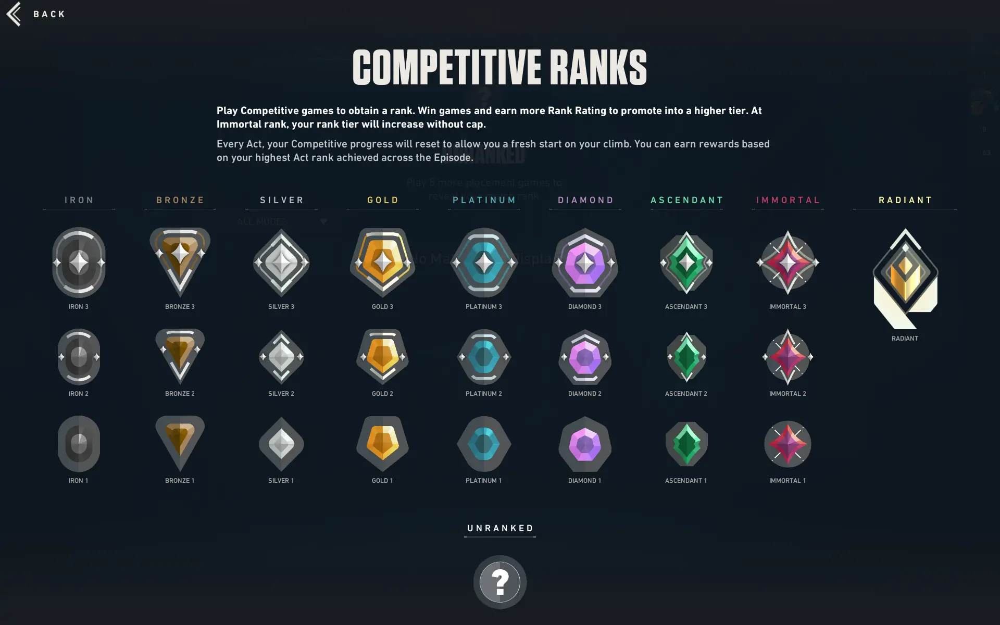
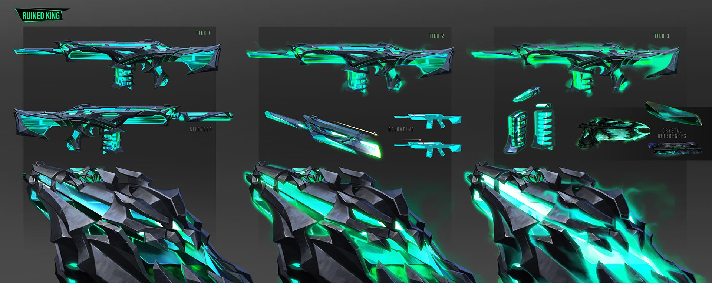
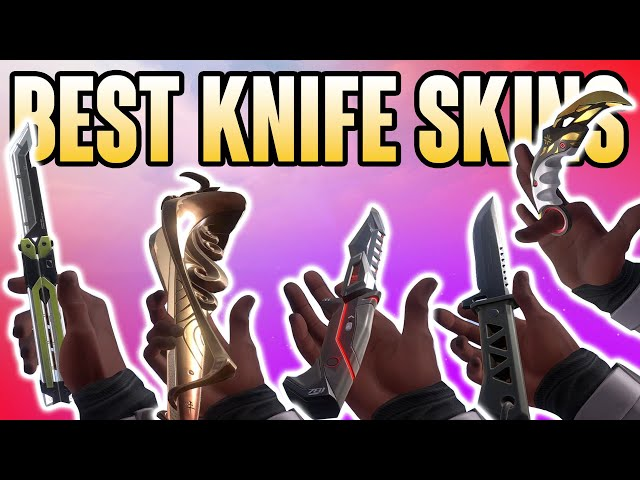

Ranked System
Each rank is divided into 3 groups, for example, bronze has the 3 groups of bronze 1, 2, and 3. 3 is the highest and 1 is the lowest. Each rank is on a scale of 0 to 100 ranked rating and hitting either 0 or 100 will either rank you up or down. The average rank in Valorant is Gold 2, where more than 3/4 of the player base resides. Radiant is the top 0.01% of a region, which contains mostly professionals and extremely skilled players. The lowest rank is iron 1, where less than 0.1% of the player base resides.
Weapon Skins
Valorant features an extensive collection of weapon skins that add a personalized touch to the vibrant, cartoony, and competitive atmosphere. These skins range from sleek, minimalist designs such as the minima set, to extravagant, animated themes such as the ruination set (pictured above), often inspired by futuristic, mythical, or fantasy themes. Each skin collection typically includes unique visual effects, custom animations, and sound effects, which enhances the player's in-game experience. Skins can be bought through the in-game store, battle passes, or special events, offering players a way to showcase their personal style and support within the Valorant community.
Knife Skins
Knife skins in Valorant are perfect for expressing personal taste, enhancing players' experience through the smooth and satisfying animations, and showing off to your teammates. The more sought-after and popular knives usually come with a hefty price tag, with knives ranging anywhere from $25-$55. but most say they are well worth the investment. Sometimes, there are exclusive knives that are released for an event that will never come back, such as the VCT 2021 Tournament Karambit which was a knife that celebrated the biggest official Valorant tournament's 2021 season with vibrant red and gold colors, paired with unique effects.